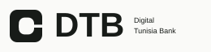
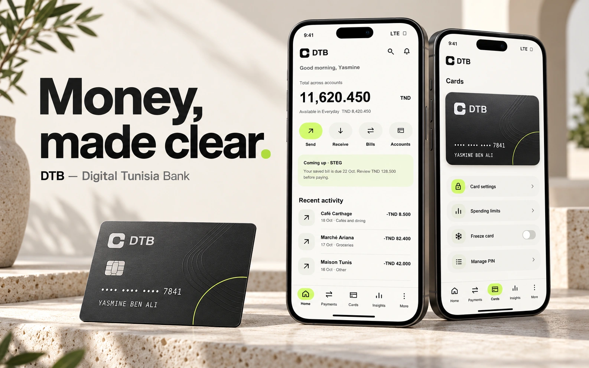

Core tasks are established.
Balances, transfers, cards and local bill payments recur across product documentation.
Product design / 2026

A quieter banking experience for Tunisia. Familiar tasks, clearer decisions, and intelligence that knows when to step back.
Explore the final experience ↓
01 / Vision & overview
DTB explores how a full banking app can feel calm without hiding the details that matter. Its central idea is simple: make the consequence of an action visible before asking someone to commit.
The concept connects available money, domestic transfers, utility bills, card security and spending records. AI helps interpret intent and explain verified information within familiar controls.
DTB is not a licensed bank, a client engagement, or a launched service. This project contains static visual walkthroughs. No participant interviews, live-app benchmark tests or usability studies were conducted.
| Design question | Working response | What would prove it |
|---|---|---|
| What is safe to spend? | Separate total holdings from Everyday availability. | Participants distinguish both amounts without prompting. |
| What will this payment cost? | Show amount, fee, total debit and availability after payment together. | Participants correctly explain the debit before authorization. |
| What can AI actually do? | Suggest filters and relevant routes; retain manual controls. | Useful search results with an understandable fallback. |
02 / Context, challenge & evidence
Tunisian digital banking already covers substantial everyday tasks. MyBIAT’s 2026 releases describe dashboard customization and category budgeting. Attijari UP documents card controls and bill payments. La Poste’s D17 and Flouci also address local transfers and bills. [S01–S08]
The opportunity is therefore a design hypothesis about clarity and control, not a claim that Tunisian banking lacks digital functionality. Public documentation establishes task relevance; it does not establish how people experience those tasks.
Balances, transfers, cards and local bill payments recur across product documentation.
People may struggle to interpret availability, fees or pending status. This needs participant evidence.
Use a stable money hierarchy, explicit review and recoverable states.
Recruit eight English-speaking Tunisian adults with recent banking-app use, varied income patterns, task confidence and accessibility needs. Conduct 45-minute interviews and four consented contextual walkthroughs using fictional records.
Explore available-money interpretation, recipient checks, pending payments, bill references and unfamiliar merchants. Ask when optional assistance helps and how people recover when it fails. Record observed actions separately from interpretation; synthesize by task and severity. These activities are proposed, not completed.
| ID | Assumption / unknown | Consequence | Next evidence |
|---|---|---|---|
| A01 | English-speaking banking users can understand the task labels. | English-only audience limits market relevance. | Recruit and test that segment explicitly. |
| A02 | Available funds are more useful than total holdings for routine decisions. | Home emphasizes Everyday availability. | Compare interpretations of both balances. |
| A03 | Phrase search adds value beyond filters. | Optional assistance adds product complexity. | Compare search relevance and task recovery. |
| A04 | Utility lookup and issuer controls can return reliable status. | Proposed flows require service integrations. | Partner and technical feasibility review. |
| A05 | A cautious approach is behavioral, not age-based. | Avoid demographic stereotypes in personas. | Recruit by behavior and situational confidence. |
03 / Competitive analysis & opportunities
I reviewed public official product pages, release notes and bank-published store descriptions on 18 October 2026. The benchmark includes six Tunisian offerings and four international references. International patterns inform communication; they do not imply Tunisian eligibility or product feasibility.
D means documented in the reviewed material. ? means unverified—not absent. Authenticated app navigation, interaction quality and accessibility were not tested.
| Product | Accounts | Transfers | Cards | Bills | Insights | Evidence |
|---|---|---|---|---|---|---|
| MyBIAT | D | D | D | D | D | May / Oct 2026 release notes |
| Attijari UP | D | D | D | D | ? | Official site + store listing |
| AMEN Mobile | D | ? | D | ? | D | Official product description |
| D17 | ? | D | ? | D | ? | La Poste service description |
| STB Mobile / STBNet | D | D | D | ? | ? | Official mobile banking page |
| Flouci | D | D | D | D | ? | Official product page |
| Revolut | D | ? | D | ? | D | Official help / security pages |
| Wise | D | D | ? | ? | ? | Official pricing + tracking help |
| Monzo | D | ? | ? | ? | D | Official Trends / Pots help |
| N26 | D | ? | D | ? | D | Official Spaces / card support |
MyBIAT’s May update already uses shortcuts and product grouping. Its October release adds category budgeting and reinforced beneficiary validation. DTB cannot credibly claim these as market-first ideas. [S01–S02]
Wise informs status visibility and upfront cost communication; Revolut and N26 inform direct card security; Monzo informs explicit scope in spending views. DTB combines those patterns around domestic tasks. [S09–S15]
04 / Provisional personas & user needs
These personas are provisional scenario models generated to explore contrasting needs. They are not interview participants, observed behavioral segments or validated market profiles. Financial capability and digital confidence are not inferred from age.
Yasmine anchors every app screen and financial record. Nader and Amel provide alternative lenses for evaluating the same concept; the interface does not silently change account holders between screens.
| Need | Design response | Screen trace |
|---|---|---|
| Understand funds | Total holdings and Everyday availability have distinct labels. | UI-04–06 |
| Verify a payment | Recipient, fee, total debit and status remain visible. | UI-13–16, UI-27–28 |
| Secure a card | Preview impact, confirm, then show Frozen and restore paths. | UI-20–21, UI-32–34 |
| Find evidence | Natural phrases become editable filters and source records. | UI-09–10, UI-30, UI-43 |
05 / Product strategy & prioritization
Working problem: when checking money, authorizing a payment or responding to uncertainty, a customer may have to reconstruct what is available, what an action costs and whether it actually happened. DTB tests whether those consequences can share a clearer visual and task structure.
Prioritization uses a consequence-first framework: protect money and access, support frequent domestic tasks, then add optional interpretation. Reach and effort are unknown, so a numerical RICE score would suggest unsupported precision.
| Priority | Scope | Why / dependency |
|---|---|---|
| Core concept | Accounts, activity, domestic transfers, bills, card freeze, secure review, receipts and recovery. | Every illustrated sensitive action needs a complete status model. |
| Second phase | Budgets, savings goals, recurring detection, virtual cards and optional search assistance. | Useful after reliable account and payment infrastructure; issuance and data-use dependencies remain. |
| Future exploration | QR acceptance, automatic saving, advanced personalization and eligible cross-border services. | Requires customer evidence, partnerships, technical validation and specialist regulatory review. |
These are study targets, not findings. With eight formative participants they guide iteration; they do not estimate population performance.
| ID | Hypothesis | Evidence / assumption | Response | Proposed criterion |
|---|---|---|---|---|
| H01 | Separate available money from holdings | A02 / S01 | UI-04–06 | ≥7/8 participants identify Everyday availability correctly. |
| H02 | Show a freeze impact preview and explicit result | S04 / S09 / S14 | UI-20–21, UI-32 | ≥7/8 explain what freeze does and its limits. |
| H03 | Separate pending from confirmed failure | S10 | UI-16, UI-27–28 | No duplicate-send attempt in an uncertain-status task. |
| H04 | Put full debit and remaining funds in review | S11 + A02 | UI-15 / UI-36 | ≥7/8 explain recipient, fee and debit before authorization. |
| H05 | Expose interpreted search filters | A03 | UI-09–10 / UI-30 | Relevant records found; ≥7/8 can correct the scope. |
| H06 | Keep manual controls when assistance is off | A03 / user-control principle | UI-30 / UI-44 | ≥7/8 recover using standard filters without moderator help. |
| H07 | Separate budget limits from card controls | S12–S15 | UI-20 / UI-24 | ≥7/8 distinguish a planning budget from a payment restriction. |
| H08 | Save bill references with due-date context | S06 / S08 + A04 | UI-17–18 / UI-35 | ≥7/8 select the intended customer reference and due bill. |
| Capability | Classification | Required work before a real service |
|---|---|---|
| Balances, domestic transfers and utility payments | Established market capability; DTB implementation remains conceptual. | Licensed bank/payment partner, ledger, reconciliation, payment rails and biller contracts. |
| Physical and virtual card issuance / freeze | Conceptual and dependent on implementation. | Issuer, card scheme, eligibility rules, confirmations and failure-state contracts. |
| Identity verification and account opening | Requires legal, regulatory and partner validation. | Authorized KYC/AML process, identity evidence, retention and human review. |
| AI processing and transaction-context use | Requires legal/privacy and technical validation. | INPDP formalities, purpose limitation, consent where appropriate, processor contracts and cross-border-data review. [S16] |
| Foreign-currency accounts and international transfers | Deferred; requires specialist review. | Verify current Tunisian exchange rules, resident eligibility, documentation and approved routes. No unrestricted capability is promised. |
| Security and account recovery | Conceptual and dependent on implementation. | Device binding, strong authentication, threat model, recovery controls and operational support. |
06 / Architecture, journeys & flows
Home, Payments, Cards, Insights and Profile stay in the same order. Search sits above that structure as a route into existing features. It never becomes a separate conversation that must be understood to use the account.
The diagrams show proposed experience logic. They are not results of card sorting, tree testing or behavioral observation.
Goal: Check available cash and recognize the next bill. Trigger: A few minutes before leaving for work.
Goal: Send the correct amount to a new recipient and keep a receipt. Trigger: Mehdi shares his domestic bank details.
Goal: Stop new use, understand freeze limits and retain a recovery path. Trigger: Maison Tunis is not recognized.
Goal: Retrieve exact subscription payments without knowing the category structure. Trigger: Reviewing this month’s recurring expenses.
Approval is conceptual and depends on an authorized banking partner and identity process. Permission refusal must allow a safe return. Account entry is gated on verification.
Rounded nodes: entry/result · Rectangles: action/system state · Diamonds: decision · Lime nodes: security checkpoints. Search interpretation is explicitly marked as AI-enabled in flow E.
Invalid recipient → UI-39 → edit reference. Insufficient funds → UI-40 → reduce amount. Cancel before authorization → review. Confirmed failure → UI-28: no debit, review before retry. Expired session → UI-47 → sign in and refresh quote.
Rounded nodes: entry/result · Rectangles: action/system state · Diamonds: decision · Lime nodes: security checkpoints. Search interpretation is explicitly marked as AI-enabled in flow E.
Lookup failure → UI-41. Unpaid bill is a retrieval result, not a payment authorization. Timeout after submission must resolve status by reference before another payment is offered.
Rounded nodes: entry/result · Rectangles: action/system state · Diamonds: decision · Lime nodes: security checkpoints. Search interpretation is explicitly marked as AI-enabled in flow E.
A freeze is reversible and does not replace a lost/stolen report. Existing authorizations may settle. If the issuer update fails, retain prior status, show failure and offer support; never show Frozen without confirmation.
Rounded nodes: entry/result · Rectangles: action/system state · Diamonds: decision · Lime nodes: security checkpoints. Search interpretation is explicitly marked as AI-enabled in flow E.
AI-enabled steps: interpretation and optional matching explanation. No result → UI-42 → widen filters. Monetary totals come from matching source rows, never generated prose.
Rounded nodes: entry/result · Rectangles: action/system state · Diamonds: decision · Lime nodes: security checkpoints. Search interpretation is explicitly marked as AI-enabled in flow E.
No transactions → empty period state. Budget is a planning limit, not a card limit or automatic transfer. Savings balance is shown separately; insights exclude transfers and savings moves.
Rounded nodes: entry/result · Rectangles: action/system state · Diamonds: decision · Lime nodes: security checkpoints. Search interpretation is explicitly marked as AI-enabled in flow E.
07 / Wireframes, alternatives & rationale
The grayscale collection uses a consistent 393 × 852 viewport, 24 px side gutters and a 4 px spacing unit. Each wireframe maps one-to-one to its final screen ID. These are structured static layouts; visual completeness does not establish usability.
Dashboard A keeps money in a stable position. Dashboard B moves the upcoming bill above it. Review A groups the financial consequence into one scan path; Review B gives explanatory context first. A is the proposed direction for both, pending comparison with participants.
| Decision | Proposed choice | Tradeoff to test |
|---|---|---|
| Dashboard | Balance first, upcoming bill below the primary actions. | Keeps a stable anchor but gives the bill less visual priority. |
| Transfer review | Amount, recipient, funding, fee, total debit and remaining funds together. | More explicit detail may increase reading time; comprehension takes priority. |
| Primary navigation | Five persistent labeled destinations. | More destinations than four tabs; validate findability and label clarity. |
| AI placement | Small interpreted-filter and explanation panels. | Some users may overlook optional help; evaluate discoverability. |
All 48 wireframes are individually available above. Corresponding final images appear in chapter 09 with the same numeric IDs.
08 / Brand identity & visual system
The open-loop mark gives DTB a compact identity at app-icon size. Its small gap becomes a metaphor for space to understand a decision. The wordmark is direct; warm whites, graphite and a controlled lime accent carry the expression.
Cards share the same mark, masked identifiers and fine line motif. Lime highlights a primary action or selection; it does not carry success, risk or security meaning on its own.
| Foundation | Specification | Constraint |
|---|---|---|
| Primitives | Warm white #FAFAF8; graphite #171B18; lime #C7F75A; mist #F0F2EC. | Lime is not used for small light text on white. |
| Semantics | Text → graphite; action/selected → lime + graphite; error → #A42B29; success → #28613C. | State always includes a label or icon. |
| Typography | System sans: Arial/Helvetica in screen artwork; existing Neue Montreal on the portfolio. Balance 34–40; page 28; section 17; body 14–16. | Captions are supporting information; critical information is not confined to tiny text. |
| Layout | 393 × 852 canvas; 24 px gutters; 4 px spacing increments; 52 px primary actions; 64 px tab area. | Artwork is a static viewport, not proof of dynamic text scaling. |
| Shape and icons | 12–20 px surface radii; pill actions; 20–24 px line icons; restrained borders. | Do not make an icon the only description of a sensitive action. |
| Elevation and motion | 1 px surface boundaries; static artwork; proposed 160–240 ms transitions. | Production must honor reduced motion and readable status timing. |
| Accessibility next step | Contrast calculations documented in the handoff; large-text reflow, focus, labels and screen-reader currency reading proposed. | No WCAG conformance claim follows from these images. |
09 / High-fidelity UI & walkthroughs
Every interface uses English, the same five-tab navigation and the same fictional account holder, Yasmine Ben Ali. TND values retain three decimal places. All merchant events, fees, payment timings and references are synthetic.
Scenario S0: Everyday availability TND 8,420.450 + Savings TND 3,200.000 = total holdings TND 11,620.450. Each walkthrough restarts from S0. The transfer and bill branches are independent.
Swipe through the sequence · Select a screen to enlarge.
Orient to total and available funds.
Open full image ↗Choose the account, not just the total.
Open full image ↗Inspect a dated activity list.
Open full image ↗Use the original record to investigate.
Open full image ↗Swipe through the sequence · Select a screen to enlarge.
Select or add a recipient.
Open full image ↗Validate the account reference.
Open full image ↗Enter TND 250.000 from Everyday.
Open full image ↗Review TND 1.000 fee and TND 251.000 debit.
Open full image ↗Explicitly authorize.
Open full image ↗Pending is not failure: do not resend.
Open full image ↗Completed receipt: availability TND 8,169.450.
Open full image ↗Swipe through the sequence · Select a screen to enlarge.
Notice the unfamiliar merchant.
Open full image ↗Open the linked debit card.
Open full image ↗Understand freeze impact before confirmation.
Open full image ↗Read the explicit Frozen status.
Open full image ↗Review the restoration decision.
Open full image ↗Active again; recovery is visible.
Open full image ↗Swipe through the sequence · Select a screen to enlarge.
Search in familiar language.
Open full image ↗Read and edit interpreted filters.
Open full image ↗Inspect the underlying payment.
Open full image ↗Use merchant/date filters if AI is unavailable.
Open full image ↗Swipe through the sequence · Select a screen to enlarge.
Choose STEG.
Open full image ↗Enter the customer reference.
Open full image ↗Check TND 128.500 and the due date.
Open full image ↗Review TND 0.500 fee; total TND 129.000.
Open full image ↗Authorize the reviewed bill.
Open full image ↗Receipt: availability TND 8,291.450.
Open full image ↗Confirmed failure: no debit; review before a new attempt.
Open full image ↗Correct the incomplete recipient reference.
Open full image ↗Reduce the amount or choose eligible funds.
Open full image ↗No payment made; retry lookup or edit the reference.
Open full image ↗Widen scope or clear search filters.
Open full image ↗Sign in again, then refresh the payment review.
Open full image ↗| Scenario | Amount | Fee | Total debit | Everyday availability |
|---|---|---|---|---|
| S0 · Baseline | — | — | — | TND 8,420.450 |
| T1 · Completed transfer | TND 250.000 | TND 1.000 | TND 251.000 | TND 8,169.450 |
| T1 · Pending transfer | TND 250.000 | TND 1.000 | TND 251.000 reserved | TND 8,169.450; ledger debit not yet final |
| T1 · Confirmed failure | TND 250.000 | TND 1.000 | TND 0.000 | TND 8,420.450 |
| B1 · Completed bill | TND 128.500 | TND 0.500 | TND 129.000 | TND 8,291.450 |
The settled-spending view covers 1–18 October: TND 1,278.900 across six categories and 14 purchases. The transfer and future bill examples are outside that historical total. Three fictional digital services total TND 52.000; TND 52.000 ÷ TND 1,278.900 = 4.1% rounded. A TND 75.000 digital-services budget leaves TND 23.000. Savings of TND 3,200.000 is 32% of a TND 10,000.000 goal.
Download the complete fictional dataset ↗ · Open the wireframe-to-UI inventory ↗
| Merchant | Date / category | Debit | Status |
|---|---|---|---|
| Café Carthage | 18 Oct · Cafés and dining | TND 8.500 | Completed |
| Marché Ariana | 17 Oct · Groceries | TND 82.400 | Completed |
| Maison Tunis | 16 Oct · Other | TND 42.000 | Completed |
| Mosaic Music | 15 Oct · Digital services | TND 17.900 | Completed |
| Nahla Cloud | 15 Oct · Digital services | TND 9.100 | Completed |
| CinemaPlus | 15 Oct · Digital services | TND 25.000 | Completed |
| Carburant Tunis | 14 Oct · Transport | TND 110.000 | Completed |
| Table du Lac | 11 Oct · Cafés and dining | TND 138.000 | Completed |
| Épicerie du Lac | 08 Oct · Groceries | TND 270.000 | Completed |
| Atelier Nabeul | 07 Oct · Other | TND 258.000 | Completed |
| Internet Jasmin | 05 Oct · Bills | TND 85.000 | Completed |
| SONEDE | 04 Oct · Bills | TND 39.000 | Completed |
| Metro Tunis | 03 Oct · Transport | TND 100.000 | Completed |
| STEG | 01 Oct · Bills | TND 94.000 | Completed |
10 / Native AI assistance & user control
DTB’s primary model is a conventional banking interface. Assistance interprets a phrase, proposes a route or explains known information. It cannot invent balances, fees, processing times or statuses, and it cannot authorize or silently execute a payment or security change.
The three-payment search total is calculated from matching source rows. The model may propose the filter; the financial calculation is deterministic.
| Pattern | Trigger | Required context | AI contribution | Manual fallback | Control boundary | Failure / explanation |
|---|---|---|---|---|---|---|
| Contextual insight | Saved bill due soon | Biller record, due date, amount | Optional reminder, not generated balance | Open Bills manually | No payment; review required | Suppress stale insight; link to bill details. |
| Intelligent search result | “Subscriptions this month” | Authorized transaction rows and date scope | Propose editable category/date filters | Merchant/date/category filters | No authorization for read-only search | Show interpreted scope; empty and unavailable states. |
| Suggested action chip | Find card limit control | Feature index and selected card | Navigate to the relevant setting | Cards → Controls → Limits | Any change still requires user action | Never apply a limit from a phrase alone. |
| Inline explanation | Explain a fee or status | Current quote/rule or issuer status | Rephrase sourced information | Read exact quote/status labels | Payment authorization stays separate | No answer if source missing; show support. |
| Pre-action assistance | Review a transfer | Recipient, source, quote and balance | Highlight review fields | Full conventional review screen | Biometrics or PIN after review | No unsolicited recipient correction or route execution. |
| Risk | Proposed mitigation | Residual dependency |
|---|---|---|
| Incorrect interpretation | Editable filters and original records; never silently execute a sensitive task. | Test ambiguity, missed matches and false-positive suggestions. |
| Fabricated money information | Balances, fees and status must be read from authoritative services. | Backend contracts, reconciliation and source freshness. |
| Sensitive-data overuse | Send minimum authorized transaction context; exclude passwords, PINs and card security codes. | Processor design, retention schedule, specialist privacy review. |
| Opaque recommendation | Show the applied scope and the contributing transactions. | Explainability and comprehension testing. |
| Assistance dependency | Optional controls plus conventional search/navigation fallback. | Reliability monitoring and service status behavior. |
| Duplicate payment after timeout | Resolve the same reference before exposing a new-send action. | Idempotency, ledger and payment-provider reconciliation. |
| Card freeze falsely shown as successful | Update the visual status only after issuer confirmation. | Issuer error handling and escalation service. |
| Session expiry / account recovery | Reauthenticate, refresh quote, retain safe progress; human escalation for recovery. | Threat model and operational recovery checks. |
11 / Proposed validation & success measures
The output is a visual concept with public-source grounding. No usability outcomes or business improvements have been measured. Static screens cannot validate task completion, functional accessibility, security or system reliability.
The proposed first study is a moderated concept-comprehension review with eight English-speaking Tunisian banking users. Functional task and assistive-technology testing would require a later, separately scoped prototype or implementation.
| Question | Method | Proposed criterion | Limit |
|---|---|---|---|
| Do people understand availability and debit? | Ask participants to explain screens in their own words. | At least 7/8 explain amount, fee and remaining funds correctly. | A formative target, not a population estimate. |
| Can people distinguish payment states? | Present pending, completed, failure and timeout scenarios. | No participant interprets pending as a reason to resend. | Static interpretation, not actual duplicate-prevention reliability. |
| Are card controls understandable? | Ask what freeze changes and how to reverse it. | At least 7/8 identify the effect and the prior-authorization caveat. | Issuer behavior remains untested. |
| Does AI scope remain understandable? | Show a phrase, applied filters and records; ask for correction. | At least 7/8 identify the scope and conventional fallback. | Intent accuracy requires a real search system. |
| Does the later product work accessibly? | Text scaling, focus order, screen-reader tasks, switch/keyboard use. | No blocker against agreed WCAG 2.2 AA-relevant checks. | Cannot be assessed from image artwork. |
Use eight moderated sessions with fictional tasks: explain available funds, review a transfer, interpret pending status, freeze a card, pay a bill and correct search scope. Obtain consent and compensate participants; never collect bank credentials or real financial records.
Record interpretation, confidence, confusion, support needed and severity. Resolve any wrong-payment or access blocker before expanding the concept. A later functional study would measure completion, recovery, critical errors and assistive-technology access. No business impact or usability improvement is claimed.
The artwork uses meaningful labels, fee-inclusive summaries and text-plus-icon statuses. A production experience still needs text scaling, reflow, focus, screen-reader currency reading, touch-target and contrast checks in its real rendering context.
12 / Reflection, limitations & next steps
DTB turns a broad banking brief into a connected visual system: 48 matching wireframes and final screens, six flows, four journey maps, a coherent identity and five sequential walkthroughs. Its strongest proposal is the continuity between a decision, its authorization and its confirmed consequence.
The unanswered questions are consequential: whether these labels match users’ mental models, whether optional assistance improves findability, whether confirmations add useful assurance, and whether local partners can deliver the status and control model reliably.
Validate needs and English terminology before treating the persona models as evidence.
Confirm payment, issuer, privacy, identity and regulatory requirements with qualified partners.
Begin with comprehension, then scope functional and assistive-technology testing separately.
All sources accessed 18 October 2026. English summaries are paraphrases. Official product descriptions are evidence of documented capability, not independent proof of quality or availability for every customer.
13 May 2026. Customizable dashboard, shortcuts and organized products.
16 Oct 2026. Category budgeting and reinforced beneficiary validation.
Undated. Biometrics, six-digit PIN and trusted-device enrollment.
Undated listing. Transfers, card activation controls, limits and STEG/SONEDE payments.
Undated. Balances, card management, budget management and cardless withdrawal.
Date not verified. D17 transfers, merchant payments and utility settlement.
Undated. STB Mobile Banking / STBNet: accounts, cards, domestic transfer services.
Undated. Current and savings accounts, transfers, cards, bills and top-ups.
Accessed 18 Oct 2026. Card controls and freeze guidance; not evidence of Tunisian eligibility.
Undated help page. A tracker explains the progression of a transfer.
Accessed 18 Oct 2026. Upfront pricing as a communication benchmark.
Undated help page. Scope and account inclusion matter in spending summaries.
Undated help page. Separating money by purpose.
Undated help page. Temporary locking, permanent disabling and replacement.
Accessed 18 Oct 2026. Purpose-based subaccounts and card linking.
Undated. The authority describes preliminary data-processing formalities under law 2004-63.
Money, made clear.
Independent fictional banking concept · English visual case study · 2026The first gesture
Have a good challenge?Let’s talk.